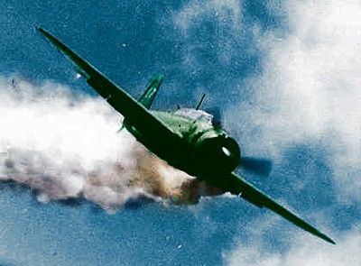

GYUNGMIN
이 영웅은 독특한 전투방식으로 기록되고 있어. 먼저 설명전에 스텟부터 보도록해.
- 보스한테 진 횟수 : 2경(민)
- 부활 횟수 : 9853경(민) 1823억번
- 체력 : 120경(민)
- 회복량 : 1경(민)%
- 공격력 : 19경(민)
무조건 경(민)을 붙여야해. 참고로 부활 횟수가 저렇게 많은건 정말 특이한 공격 방식 덕분인데,
바로 『카미카제』라고 불리는 전술이야. 비행기를 타고 냅다 보스한테 꼬라박아버리지.
하지만 유의미한 피해는 주지 못했다고 전해져. 하필이면 그가 탄 비행기가 온유가 만들어준 비행기였거든..
일단 그의 기록을 확인해봐
명민하고 지적인 혁명가였던 경민스키 역시 현실 정치의 세계와 타협하지 못하고 비극적인
최후를 맞이했다. 새롭게 급부상한 육개장 보스들의 세력으로부터 자신을 보호하긴 커녕 오히려
꼬라쳐박기를 하질 않나, 결국은 독재자에게 아첨했던 그는 두개골에 비행기 잔해가 꽂히며
비극적인 죽음을 맞이했다. 그는 죽기전 이런말을 전했다고 한다.
"X발 누가 나좀 살려줘봐 내가 뭐했는데 나랑 겜도 안해주고 때려치워라!"
